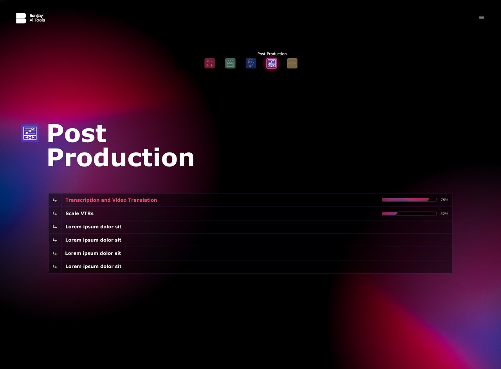
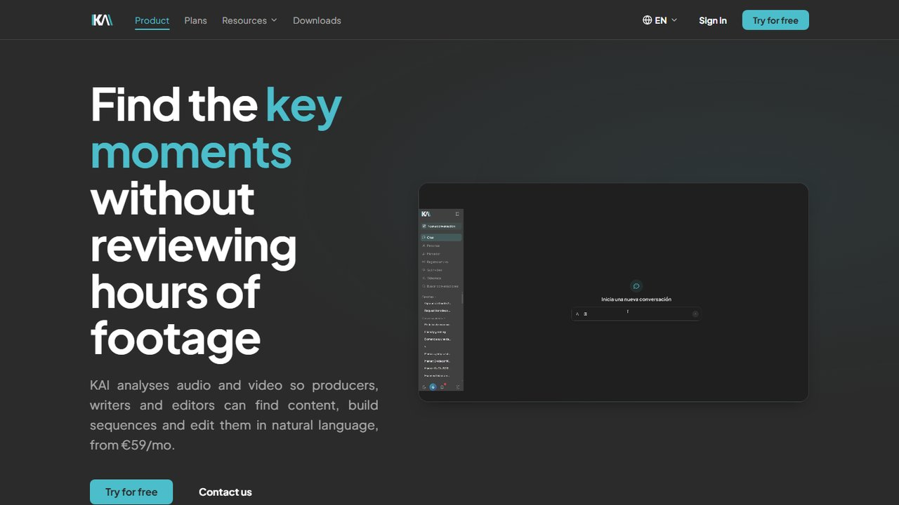
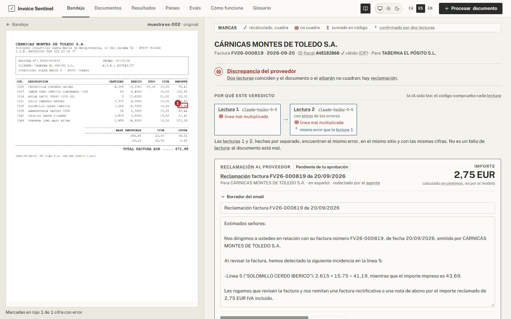
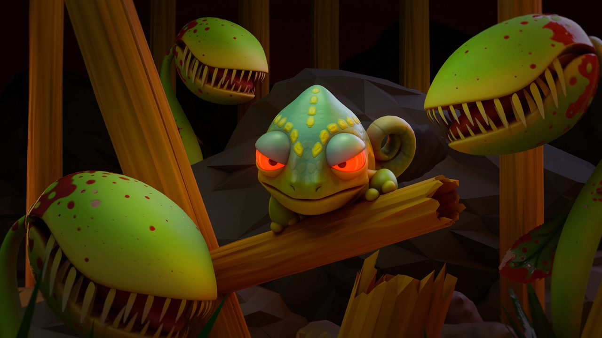
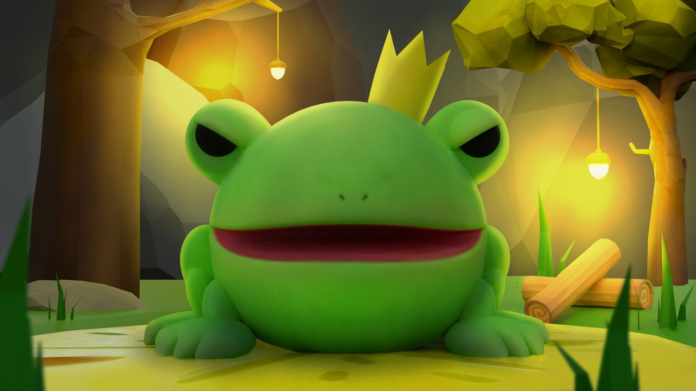
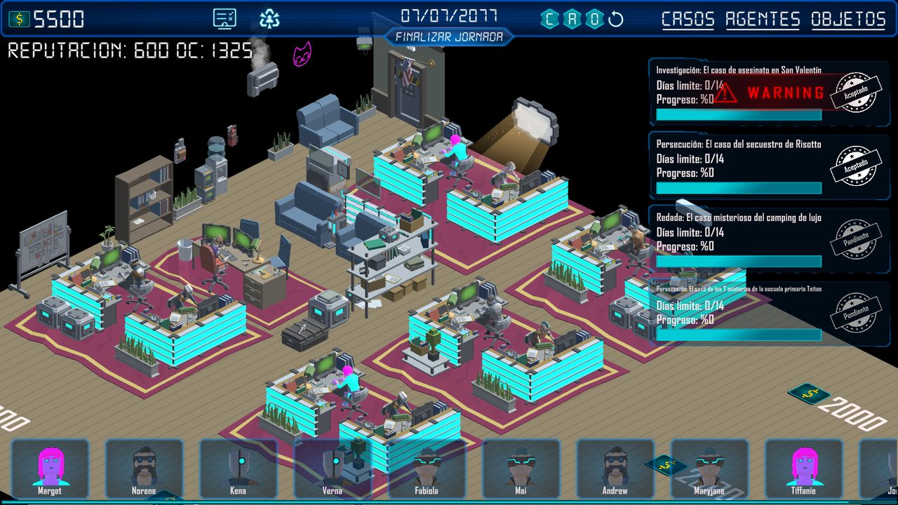
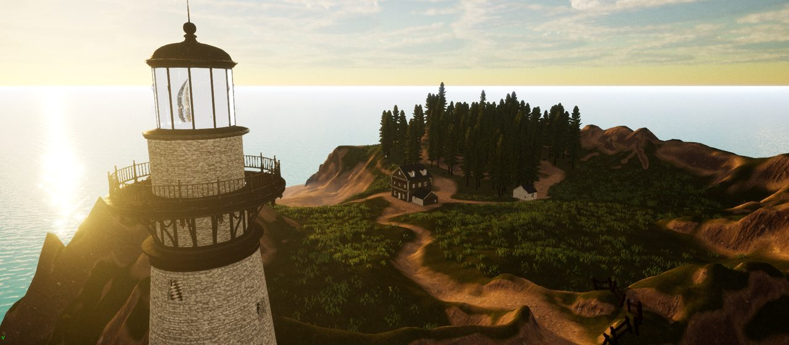
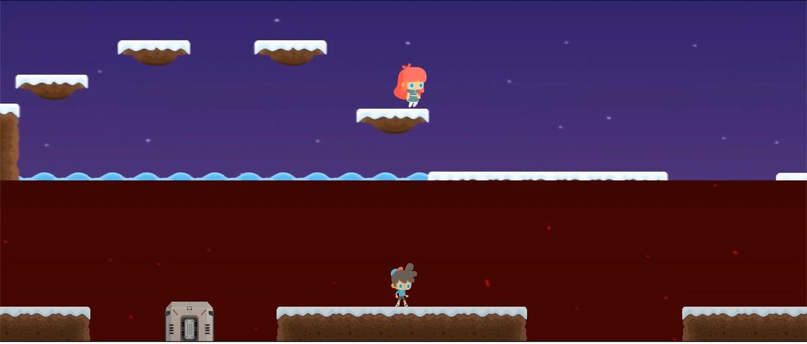
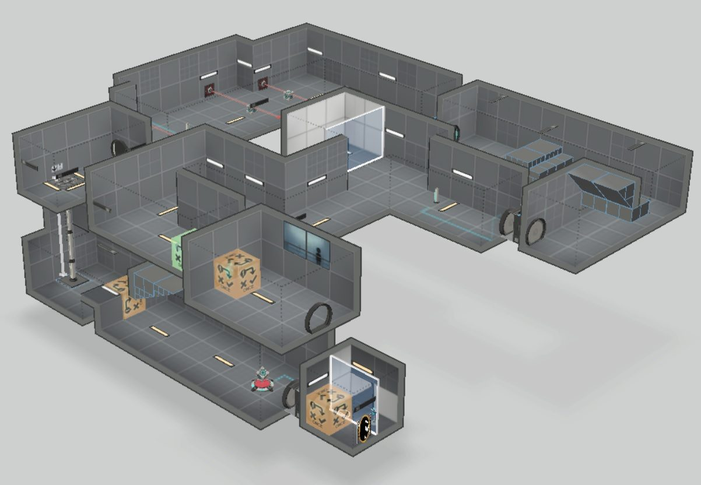

★ FeaturedDestacadoBanijay AI Tools
Full-stack · React + Python · Gestmusic (Banijay)
View details →Ver detalles →
Welcome to my portfolio. I hope you like the projects I've worked on! Te doy la bienvenida a mi portfolio. ¡Espero que te gusten los proyectos en los que he trabajado!
Portfolio

★ FeaturedDestacadoFull-stack · React + Python · Gestmusic (Banijay)
View details →Ver detalles →

Full-stack · AI storytelling platform · Gestmusic & AmplifyFull-stack · Plataforma de storytelling con IA · Gestmusic y Amplify
View details →Ver detalles →

Personal project · LLM agents + evals · TypeScriptProyecto personal · Agentes LLM + evals · TypeScript
View details →Ver detalles →

View detailsVer detallesRoblox · 6M visitsRoblox · 6M visitas
View details →Ver detalles →

View detailsVer detallesRoblox · 5.2M visitsRoblox · 5,2M visitas
View details →Ver detalles →

View detailsVer detallesUnity · Gameplay Programmer & ProducerUnity · Programación de gameplay y producción
View details →Ver detalles →

View detailsVer detallesUnreal Engine · Third-year final projectUnreal Engine · Proyecto final de tercer curso
View details →Ver detalles →

View detailsVer detallesUnity · Gameplay Programmer & Game DesignerUnity · Programación de gameplay y game design
View details →Ver detalles →

View detailsVer detallesAcademic work · Level DesignerTrabajo académico · Diseño de niveles
View details →Ver detalles →
Master's thesis · MSc in Artificial Intelligence, UNIR · September 2026 Trabajo Fin de Máster · Máster en Inteligencia Artificial, UNIR · Septiembre de 2026
An experimental pilot that turns ten years of world news, coded as events by GDELT, into a daily graph of countries and feeds it, together with the S&P 500 itself, to a heterogeneous graph neural network that classifies the next trading session as down, neutral or up. Un piloto experimental que convierte diez años de noticias mundiales, codificadas como eventos por GDELT, en un grafo diario de países y lo introduce, junto con el propio S&P 500, en una red neuronal de grafos heterogénea que clasifica la siguiente sesión bursátil como bajista, neutral o alcista.
With Francesc Aguiló · Supervised by Guillermo Torralba Elipe · Con Francesc Aguiló · Dirigido por Guillermo Torralba Elipe · Source code ↗Código fuente ↗
Dataset and geopolitical graph. Extraction, filtering and preprocessing of GDELT, deduplication and cleaning, alignment of the S&P 500 series, and the design and construction of the graph: nodes, edges, attributes and daily snapshots. Dataset y grafo geopolítico. Extracción, filtrado y preprocesado de GDELT, deduplicación y limpieza, alineación de la serie del S&P 500, y diseño y construcción del grafo: nodos, aristas, atributos e instantáneas diarias.
GNN model and evaluation. Architecture, fusion of the geopolitical and financial information, training, baseline models, classification metrics and automation of the daily prediction. Modelo GNN y evaluación. Arquitectura, fusión de la información geopolítica y financiera, entrenamiento, modelos de referencia, métricas de clasificación y automatización de la predicción diaria.
Before fixing the pipeline, a single day (118,201 events) was taken apart to see whether the volume could be reduced without losing signal. The rows turned out to point to only 24,412 unique URLs, almost five rows per article. Four reduction techniques were tried and only the two simplest filters survived: Antes de fijar el pipeline se desmontó un único día (118.201 eventos) para ver si se podía reducir el volumen sin perder señal. Resultó que las filas apuntaban a solo 24.412 URL únicas, casi cinco filas por artículo. Se probaron cuatro técnicas de reducción y solo sobrevivieron los dos filtros más sencillos:
| TechniqueTécnica | Kept?¿Se mantiene? | WhyPor qué |
|---|---|---|
| URL normalisation and deduplicationNormalización y deduplicación de URL | No | Catches the same URL repeated, not the same event covered by different outlets.Detecta la misma URL repetida, no el mismo evento cubierto por medios distintos. |
| Synthetic text + MiniLM embeddingsTexto sintético + embeddings MiniLM | No | Too costly to compute and store for all 2,751 trading days for what it added.Demasiado costoso de calcular y almacenar para los 2.751 días bursátiles para lo que aportaba. |
| Cosine-similarity clustering (0.80)Clustering por similitud coseno (0,80) | No | 94.4% of clusters were singletons; the large ones grouped by topic, not by event.El 94,4% de los clústeres tenían un solo elemento; los grandes agrupaban por tema, no por evento. |
| LDA topic modellingModelado de temas con LDA | No | Topics captured word co-occurrence (country and city names), not usable geopolitical themes.Los temas captaban coocurrencias de palabras (nombres de países y ciudades), no temas geopolíticos aprovechables. |
| Media coverage filter (mentions ≥ 5)Filtro de cobertura mediática (menciones ≥ 5) | YesSí | Halves the volume by dropping local noise, with a simple, auditable rule.Reduce el volumen a la mitad eliminando ruido local, con una regla sencilla y auditable. |
| Geopolitical roster (20 actors)Lista geopolítica (20 actores) | YesSí | Concentrates the signal on the actors that matter for the US market.Concentra la señal en los actores que importan para el mercado estadounidense. |
United States; China and Russia; the EU, Germany, France and the UK; Japan, South Korea, India, Taiwan and Australia; Canada, Mexico and Brazil; Saudi Arabia, Iran, Israel, Turkey and North Korea. Each carries 11 features: mean tone and Goldstein scale, event and mention counts, trade weight with the US, in and out degree, and its QuadClass mix. Estados Unidos; China y Rusia; la UE, Alemania, Francia y Reino Unido; Japón, Corea del Sur, India, Taiwán y Australia; Canadá, México y Brasil; Arabia Saudí, Irán, Israel, Turquía y Corea del Norte. Cada uno lleva 11 atributos: tono medio y escala Goldstein, número de eventos y de menciones, peso comercial con EE. UU., grado de entrada y de salida, y su reparto por QuadClass.
Using all 200+ countries in GDELT would have drowned the relevant messages in noise, so the roster is fixed. NATO was left out because its events overlap heavily with the US node. Usar los más de 200 países de GDELT habría ahogado los mensajes relevantes en ruido, así que la lista es fija. La OTAN se dejó fuera porque sus eventos se solapan mucho con el nodo de EE. UU.
The S&P 500 as its own node type with 9 financial features: 1, 5 and 21-day returns, 21-day volatility, volume, VIX, the dollar index, the fed funds rate and the 10-year Treasury yield. El S&P 500 como tipo de nodo propio con 9 atributos financieros: rentabilidades a 1, 5 y 21 días, volatilidad a 21 días, volumen, VIX, índice del dólar, tipo de los fondos federales y rentabilidad del bono del Tesoro a 10 años.
Country → country interactions typed by QuadClass (verbal/material × cooperation/conflict), country → market exposure weighted by an estimate of trade with the US, and market → country so the market state flows back to the countries during message passing. Interacciones país → país tipadas por QuadClass (verbal/material × cooperación/conflicto), exposición país → mercado ponderada por una estimación del comercio con EE. UU., y mercado → país para que el estado del mercado vuelva a los países durante el paso de mensajes.
Typing edges by QuadClass evens things out: verbal cooperation is almost two thirds of all events, but once events are aggregated into daily country-pair edges no category drops below a fifth. Tipar las aristas por QuadClass equilibra el reparto: la cooperación verbal supone casi dos tercios de todos los eventos, pero una vez agregados en aristas diarias entre pares de países ninguna categoría baja de una quinta parte.
Events vs. edges by QuadClass, 2015–2025Eventos frente a aristas por QuadClass, 2015–2025
Share of each categoryPorcentaje de cada categoría
| QuadClass | EventsEventos | % | EdgesAristas | % |
|---|---|---|---|---|
| Verbal cooperationCooperación verbal | 14,053,684 | 63.3 | 862,753 | 39.2 |
| Material cooperationCooperación material | 2,444,943 | 11.0 | 462,327 | 21.0 |
| Verbal conflictConflicto verbal | 2,867,687 | 12.9 | 449,638 | 20.5 |
| Material conflictConflicto material | 2,827,610 | 12.7 | 423,939 | 19.3 |
DiscardedDescartado
Late fusionFusión tardía
A GNN for the graph and an LSTM for prices, joined only before the classifier. The two sides never see each other while they're being processed.Una GNN para el grafo y una LSTM para los precios, unidas solo antes del clasificador. Las dos partes nunca se ven mientras se procesan.
ChosenElegido
S&P 500 as a nodeS&P 500 como nodo
The index lives inside the graph, so geopolitics and market state exchange messages in every layer, and attention weights stay interpretable.El índice vive dentro del grafo, así que la geopolítica y el estado del mercado intercambian mensajes en cada capa, y los pesos de atención siguen siendo interpretables.
Future workTrabajo futuro
11 GICS sector nodes11 nodos de sector GICS
Much finer interpretability, but country–sector edges need paid exposure data or the GDELT GKG, too much risk for a master's thesis timeline.Mucha más interpretabilidad, pero las aristas país–sector necesitan datos de exposición de pago o el GKG de GDELT, demasiado riesgo para los plazos de un TFM.
Instead of a new graph every day (the relationship forgets yesterday) or a continuous-time graph (GDELT 1.0 has no timestamps within the day), the graph persists. Each event reinforces its edge and the weight then decays exponentially, in the spirit of Hawkes processes. A military attack should linger longer than a statement, so the decay rate depends on the event's QuadClass, around a 10-day base half-life. Events older than 60 days are dropped. En lugar de un grafo nuevo cada día (la relación olvida el día anterior) o de un grafo en tiempo continuo (GDELT 1.0 no tiene marcas de tiempo dentro del día), el grafo persiste. Cada evento refuerza su arista y después el peso decae exponencialmente, en la línea de los procesos de Hawkes. Un ataque militar debería pesar durante más tiempo que una declaración, así que la tasa de decaimiento depende de la QuadClass del evento, en torno a una vida media base de 10 días. Los eventos de más de 60 días se descartan.
Weight left on an edge after one eventPeso que queda en una arista tras un evento
By QuadClass, over the 60-day window · hover to read each dayPor QuadClass, en la ventana de 60 días · pasa el cursor para leer cada día
| QuadClass | MultiplierMultiplicador | λ | Half-lifeVida media | Left at day 60Restante el día 60 |
|---|---|---|---|---|
| Verbal cooperationCooperación verbal | 1.5 | 0.1040 | 6.7 d | 0.2% |
| Material cooperationCooperación material | 1.0 | 0.0693 | 10.0 d | 1.6% |
| Verbal conflictConflicto verbal | 0.7 | 0.0485 | 14.3 d | 5.5% |
| Material conflictConflicto material | 0.4 | 0.0277 | 25.0 d | 19.0% |
HeteroGAT with GATv2 attention, chosen over R-GCN (no attention), HAN (needs hand-defined meta-paths) and HGT (slower to develop, and a one-class swap away if needed). HeteroGAT con atención GATv2, elegida frente a R-GCN (sin atención), HAN (requiere meta-paths definidos a mano) y HGT (más lenta de desarrollar, y a un simple cambio de clase si hiciera falta).
Deliberately small for 2,751 samples: 64 hidden dimensions, 2 message-passing layers with 4 heads and residual connections, dropout 0.3, weight decay 1e-4 and early stopping with patience 15. Country–market weights are fixed inputs, not trained. Deliberadamente pequeña para 2.751 muestras: 64 dimensiones ocultas, 2 capas de paso de mensajes con 4 cabezas y conexiones residuales, dropout 0,3, weight decay 1e-4 y early stopping con paciencia 15. Los pesos país–mercado son entradas fijas, no se entrenan.
Labels are terciles of daily returns, recomputed inside each fold from its own training data so no future distribution leaks in. Each fold trains on everything before its cut and is tested once on the next 250 sessions. Las etiquetas son terciles de las rentabilidades diarias, recalculados dentro de cada fold con sus propios datos de entrenamiento para que no se filtre ninguna distribución futura. Cada fold entrena con todo lo anterior a su corte y se evalúa una sola vez en las 250 sesiones siguientes.
Expanding walk-forward, 10 foldsWalk-forward expansivo, 10 folds
Repeated with seeds 0, 1 and 2 · 30 out-of-sample runsRepetido con las semillas 0, 1 y 2 · 30 ejecuciones fuera de muestra
F1-macro against the baselinesF1-macro frente a los baselines
Same features, flattened for the baselinesMismos atributos, aplanados para los baselines
| ModelModelo | AccuracyExactitud | F1-macro | F1 down / neutral / upF1 bajada / neutral / subida |
|---|---|---|---|
| Majority classClase mayoritaria | 0.396 | 0.189 | 0.00 / 0.57 / 0.00 |
| Logistic regressionRegresión logística | 0.340 | 0.301 | 0.39 / 0.44 / 0.08 |
| XGBoost | 0.352 | 0.325 | 0.31 / 0.19 / 0.48 |
| HGNN | 0.412 | 0.352 | 0.28 / 0.42 / 0.36 |
Confusion matrixMatriz de confusión
7,500 out-of-sample predictions · rows are the real class7.500 predicciones fuera de muestra · las filas son la clase real
The baselines were evaluated on the first fold; on that same fold the HGNN scores 0.356 F1-macro, still above all three. Los baselines se evaluaron en el primer fold; en ese mismo fold la HGNN obtiene 0,356 de F1-macro, aún por encima de los tres.
The model beats chance and every baseline, but the simulated strategy trails buy & hold by 5.3 points per fold and captures only 2.7% of the available market movement. Down days are the weak spot: only 28% are caught, so there's no evidence it would protect capital in a falling market either. El modelo supera al azar y a todos los baselines, pero la estrategia simulada queda 5,3 puntos por fold por detrás del buy & hold y solo captura el 2,7% del movimiento de mercado disponible. Los días de bajada son el punto débil: solo detecta el 28%, así que tampoco hay evidencia de que protegiera el capital en un mercado bajista.
Sessions predicted as neutral really are calm: an average absolute move of 0.43% against 0.95% for the rest. Geopolitical tension seems to say more about how much the market will move than about which way, which was not the starting hypothesis. Las sesiones que predice como neutrales son realmente tranquilas: un movimiento absoluto medio del 0,43% frente al 0,95% del resto. La tensión geopolítica parece decir más sobre cuánto se moverá el mercado que sobre hacia dónde, y esa no era la hipótesis de partida.
Accuracy by prediction confidenceExactitud según la confianza de la predicción
Above 0.40 confidence, being more sure doesn't make the model more right · the horizontal line is chance (0.333)Por encima de 0,40 de confianza, estar más seguro no hace que el modelo acierte más · la línea horizontal es el azar (0,333)
| ConfidenceConfianza | PredictionsPredicciones | AccuracyExactitud |
|---|---|---|
| 0.33–0.40 | 2,753 | 0.360 |
| 0.40–0.50 | 3,650 | 0.444 |
| 0.50–0.60 | 903 | 0.441 |
| 0.60–0.70 | 142 | 0.437 |
| 0.70–1.00 | 52 | 0.442 |
Four training runs, each one tightening the protocol after finding a flaw in the previous one. Accuracy is compared with the majority-class baseline of the same run: asymmetric labels make one class much larger, so accuracies aren't comparable across labelling schemes. Cuatro entrenamientos, cada uno endureciendo el protocolo tras encontrar un fallo en el anterior. La exactitud se compara con el baseline de clase mayoritaria de la misma ejecución: las etiquetas asimétricas hacen que una clase sea mucho mayor, así que las exactitudes no son comparables entre esquemas de etiquetado.
| RunEjecución | SetupConfiguración | Accuracy · baselineExactitud · baseline | F1-macro · baseline | TakeawayConclusión |
|---|---|---|---|---|
| 01 · Colab | Terciles, 15 foldsTerciles, 15 folds | 0.553 · 0.561 | 0.428 · 0.257 | Below the majority baseline in accuracy; trading thresholds were picked looking at the test data.Por debajo del baseline mayoritario en exactitud; los umbrales de trading se eligieron mirando los datos de test. |
| 02 · Local | Terciles, 10 folds × 3 seedsTerciles, 10 folds × 3 semillas | 0.412 · 0.371 | 0.352 · 0.189 | Presented result: the only run above the majority baseline in both metrics.Resultado presentado: la única ejecución por encima del baseline mayoritario en ambas métricas. |
| 03 · Labelling03 · Etiquetado | q20/q80 labels, class weights, temperature scalingEtiquetas q20/q80, pesos de clase, temperature scaling | 0.487 · 0.569 | 0.369 · 0.241 | An "always neutral" model beats it in accuracy; threshold sweep still over the whole out-of-sample set.Un modelo que siempre dice «neutral» lo supera en exactitud; el barrido de umbrales sigue haciéndose sobre todo el conjunto fuera de muestra. |
| 04 · Strict protocol04 · Protocolo estricto | q20/q80, calibration folds 0–4 and test folds 5–9, frozen thresholdsq20/q80, folds de calibración 0–4 y de test 5–9, umbrales congelados | 0.522 · 0.562 | 0.352 · 0.235 | Cleanest protocol. Beat buy & hold on its isolated test block (+103.6% vs +86.9%) but lost over the full sample.El protocolo más limpio. Superó al buy & hold en su bloque de test aislado (+103,6% frente a +86,9%), pero perdió en la muestra completa. |
The pipeline, the graph formulation and the evaluation all work end to end, and there is a measurable signal. Its weakness points to three causes that the pilot can't separate: a model too complex for 2,751 samples (which also explains the poor calibration and the variance between seeds), a one-day horizon that captures only the noisiest part of the market's reaction, and an index that dilutes geopolitics more than oil or gold would. El pipeline, la formulación del grafo y la evaluación funcionan de principio a fin, y hay una señal medible. Su debilidad apunta a tres causas que el piloto no puede separar: un modelo demasiado complejo para 2.751 muestras (lo que también explica la mala calibración y la varianza entre semillas), un horizonte de un día que solo captura la parte más ruidosa de la reacción del mercado, y un índice que diluye la geopolítica más de lo que lo harían el petróleo o el oro.
Barcelona, SpainBarcelona, España
ricardmartin.dev@gmail.com
Software engineer and game programmer with 4 years of professional experience building digital products end to end, from the initial idea to launch and long-term maintenance. Four Roblox titles shipped and maintained in production with 5.8 million accumulated visits, work with Unity and Unreal Engine, and an internal AI platform used daily across Banijay Iberia. Currently completing a Master's degree in Artificial Intelligence and Big Data, focusing on artificial intelligence systems and game AI. Perfil de ingeniería de software y programación de videojuegos con 4 años de experiencia profesional creando productos digitales de principio a fin, desde la idea inicial hasta el lanzamiento y el mantenimiento a largo plazo. Cuatro títulos de Roblox publicados y mantenidos en producción con 5,8 millones de visitas acumuladas, trabajo con Unity y Unreal Engine, y una plataforma interna de IA que se usa a diario en todo Banijay Iberia. Actualmente cursando el Máster en Inteligencia Artificial y Big Data, con foco en sistemas de inteligencia artificial e IA para videojuegos.
March 2022 – PresentMarzo de 2022 – actualidad
Gestmusic — Barcelona, SpainGestmusic — Barcelona, España
February 2018 – May 2018Febrero de 2018 – mayo de 2018
Infinite Technology — Dublin, IrelandInfinite Technology — Dublín, Irlanda
Nov 2024 – 2026Nov. 2024 – 2026
Universidad Internacional de La Rioja (UNIR)
Sep 2018 – Jun 2022Sept. 2018 – jun. 2022
ENTI — University of BarcelonaENTI — Universitat de Barcelona
Sep 2016 – Jun 2018Sept. 2016 – jun. 2018
CESF: Centre d'Estudis Sant Francesc — Barcelona, SpainCESF: Centre d'Estudis Sant Francesc — Barcelona, España